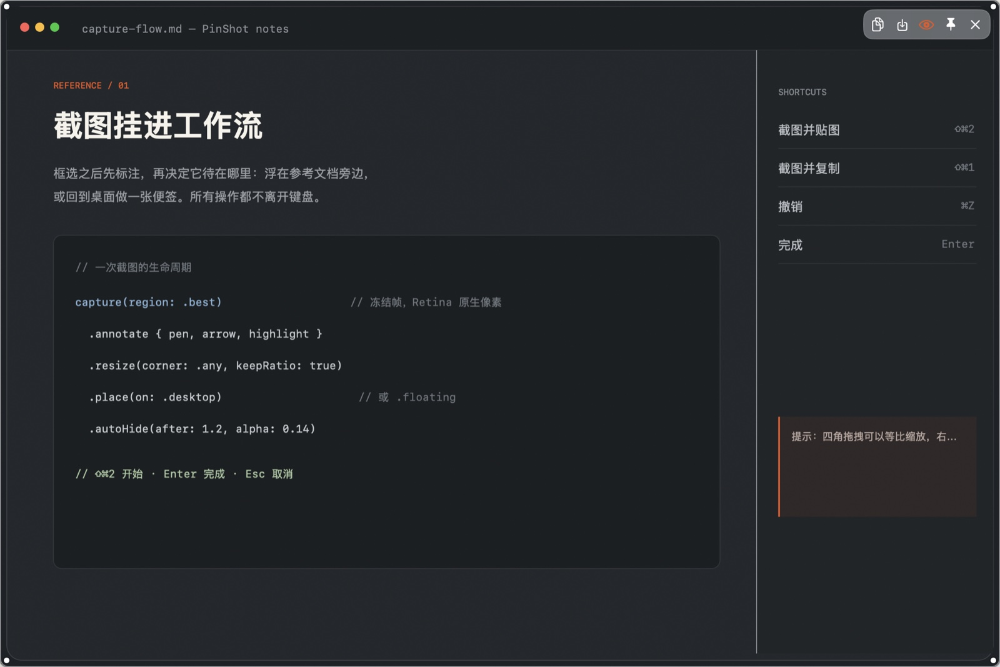
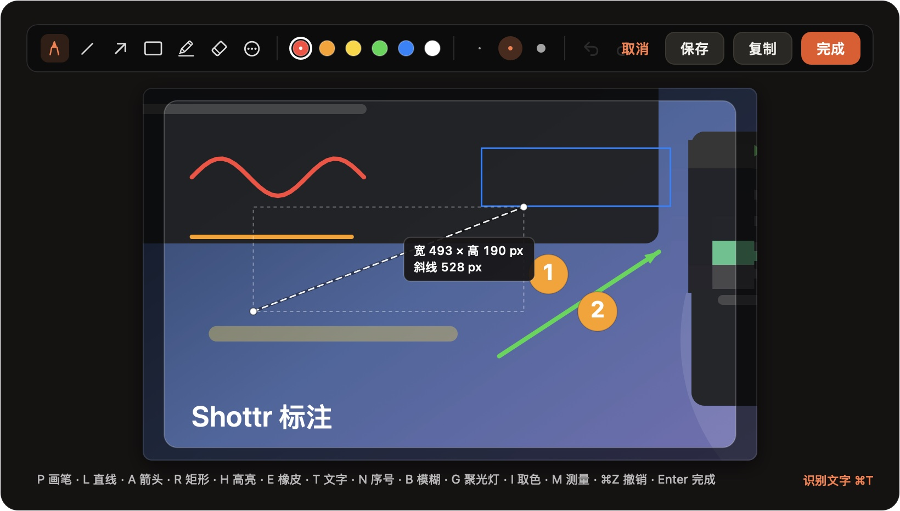
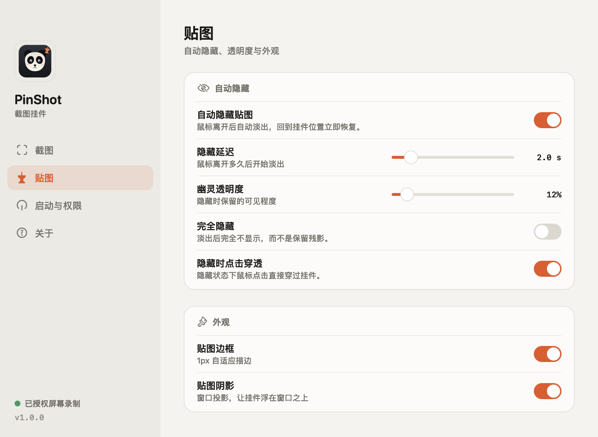

浮在最上层
floating贴在原来的屏幕位置，比普通窗口更高一层。拖动、缩放、复制、保存都在悬停工具栏里。
PinShot 把框选截图变成一块随手可用的挂件：可以标注、识别文字、缩放，浮在窗口之上，或像便签一样挂在桌面。鼠标移开自动淡出，扫回原处立刻恢复。



贴图模式
需要在写代码时参考的文档，就浮在窗口最上层；不需要一直盯着看的参考图，就挂在桌面，像一张便签。
每个挂件都能单独切换，设置里还能选择新截图的默认放置方式。挂在桌面时自动隐藏暂停，移开窗口就能看到。截图入口还包括窗口选择、全屏、延时、重复上次区域与滚动截图。
贴在原来的屏幕位置，比普通窗口更高一层。拖动、缩放、复制、保存都在悬停工具栏里。
放在桌面图标之上、普通窗口之下。工作窗口盖上来时它安静待着，回到桌面它就在那里。
工具矩阵
从快速取字到长图拼接，从像素放大到干净导出；常用的那几件事，不需要再打开第二个 App。
自动识别截图中的中英文与二维码，结果面板可直接选择或复制全文。
⌘T框选后自动滚动并拼接长页面；没有辅助功能权限时，手动滚动也能完成。
菜单栏按 ⌃⌥⌘G 或菜单栏启动，框选后约 10fps 录屏，最长 15 秒；HUD 停止后自动保存 GIF 到桌面。
⌃⌥⌘G从窗口列表选择、截取整屏，或留出 3/5/10 秒布置界面；也能重复上次区域。
Shift正方形放大镜查看像素、取色复制 hex、测量像素尺寸，并显示 WCAG 对白/对黑对比度。
ZIM给截图垫一层纸白、石墨、纯白或信号橙底色，加圆角与阴影后直接贴图或导出。
⋯更多工具把当前合成图交给系统分享面板：AirDrop、信息、邮件、备忘录或已安装的分享扩展。
⇧⌘S标注
框选完成就直接进入标注编辑器，不用打开另一个 App。画笔、直线、箭头、矩形、高亮、橡皮擦之外，还有文字、序号、模糊/马赛克、聚光灯、取色、像素测量、放大镜/WCAG 对比度；六种颜色、三档粗细、撤销重做都在手边。
按 Enter 完成并贴图；也可以 ⌘C 复制、⌘S 存成 PNG，或 ⇧⌘S 直接分享到 AirDrop / 信息 / 邮件。标注以原生像素合成，Retina 下依然清晰。打开编辑器时会自动离线识别截图文字与二维码，⌘T 打开结果面板直接复制；导出时可加纸白/石墨/纯白/信号橙背景板、圆角与阴影。
缩放与剪贴板
悬停时四角出现把手，拖动任意一角等比缩放，底部会显示当前尺寸。也可以右键选择 100%、75%、50%、25% 或「适合屏幕」。
没有屏幕录制权限？
先用系统截图 ⇧⌃⌘4 复制到剪贴板，再从菜单栏选择「从剪贴板贴图…」。标注、缩放、贴图能力完整保留。
拖拽四角，底部实时显示当前挂件的尺寸。
首次使用
macOS 14+ / Apple Silicon；Windows 10/11 x64。macOS 安装包约 2.5 MB，Windows 便携包约 151 MB。
打开 DMG，把 PinShot.app 拖进 Applications。也可以下载 ZIP 后手动移动。
本版本未做 Apple 公证，第一次请右键点击 App 选择「打开」。之后就能正常双击启动。
按引导授予权限，完成后退出并重新打开。按 ⇧⌘2 框选第一张截图。
Windows 用户：下载 ZIP 后解压，直接运行 PinShot.exe；首次启动 SmartScreen 提示时选择「更多信息 → 仍要运行」。详见 Windows Beta 说明。
在 Applications 中右键 PinShot.app →「打开」，再确认打开。如果仍然被系统拦截，在终端执行：
xattr -dr com.apple.quarantine /Applications/PinShot.app下载
macOS 1.3.1 已发布；Windows 版为 Beta。两个平台都开源，无需账户。
macOS 14+ · Apple Silicon · 原生 AppKit
版本说明与校验和Windows 10/11 x64 · Electron 便携版
Windows Beta 说明